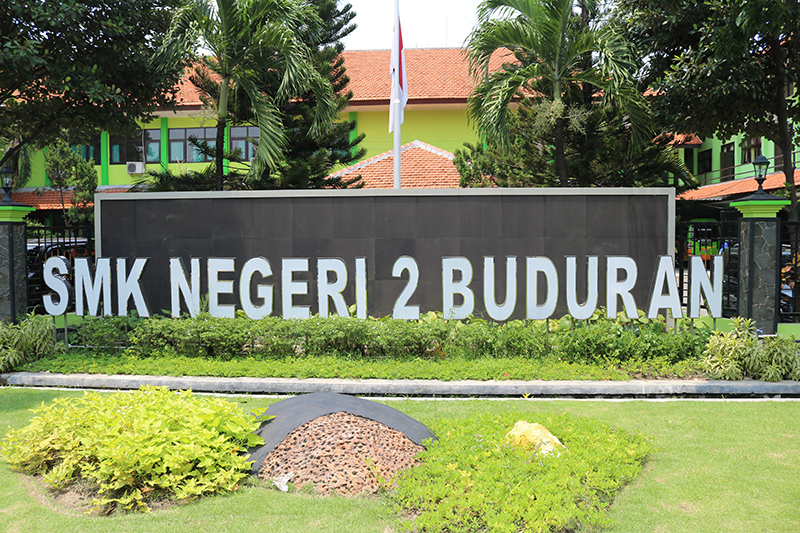

Tentangaku.com
Sekolah
SMKN 2 Buduran
SMKN 2 Buduran adalah sekolah di mana saya menimba ilmu sekolah yang mengajarkan saya dari yang tidak bisa komputer menjadi bisa komputer dari yang tidak tau apa menjadi tau banyak hal smkn 2 buduran di sana banyak sekali teman teman yang membuat saya senang ada perempuan ada juga laki laki setiap hari saya mencari ilmu atau menambah ilmu banyak guru yang membibing saya dan membuat saya menjadi seperti ini.